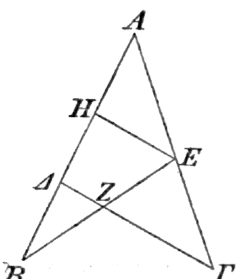
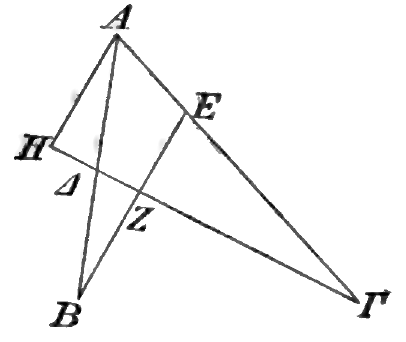
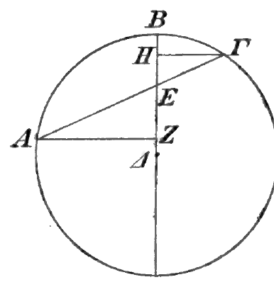
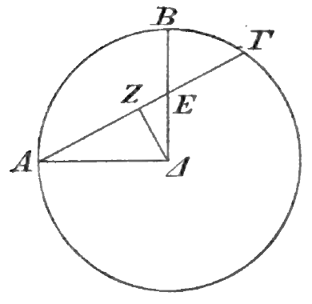
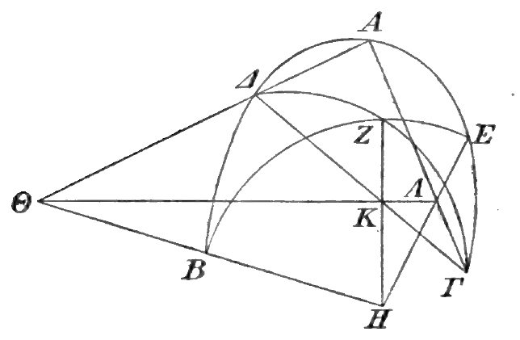

Ptolemy’s Almagest I.13 — The Surviving Greek Witness¶
Claudius Ptolemy, Syntaxis Mathematica Lib. I Cap. 13 (ed. J. L. Heiberg, 1898, pp. 68–75)








Preliminaries to Spherical Proofs (pp. 68–75)¶
[§3.5 · Original Translation from Heiberg’s Greek Text, pp. 68–69, 74–75]
The Planar Transversal Lemma (Heiberg pp. 68–69)¶
“Across two straight lines \(\mathrm{AB}\) and \(\mathrm{A\Gamma}\), let two straight lines \(\mathrm{BE}\) and \(\mathrm{\Gamma\Delta}\) be drawn cutting one another at point \(\mathrm{Z}\). I say that the ratio of \(\mathrm{\Gamma A}\) to \(\mathrm{AE}\) is compounded of the ratio of \(\mathrm{\Gamma\Delta}\) to \(\mathrm{\Delta Z}\) and the ratio of \(\mathrm{ZB}\) to \(\mathrm{BE}\).
For let \(\mathrm{EH}\) be drawn through \(\mathrm{E}\) parallel to \(\mathrm{\Gamma\Delta}\). Since \(\mathrm{\Gamma\Delta}\) and \(\mathrm{EH}\) are parallel, the ratio of \(\mathrm{\Gamma A}\) to \(\mathrm{EA}\) is the same as that of \(\mathrm{\Gamma\Delta}\) to \(\mathrm{EH}\) [Euclid Elements VI.4]. And \(\mathrm{Z\Delta}\) being intermediate: the ratio of \(\mathrm{\Gamma\Delta}\) to \(\mathrm{EH}\) shall be compounded of the ratio of \(\mathrm{\Gamma\Delta}\) to \(\mathrm{\Delta Z}\) and that of \(\mathrm{\Delta Z}\) to \(\mathrm{HE}\)… And furthermore the ratio of \(\mathrm{\Delta Z}\) to \(\mathrm{HE}\) is the same as that of \(\mathrm{ZB}\) to \(\mathrm{BE}\) [Euclid VI.4] because \(\mathrm{EH}\) and \(\mathrm{Z\Delta}\) are again parallel. Therefore the ratio of \(\mathrm{\Gamma A}\) to \(\mathrm{AE}\) is compounded of the ratio of \(\mathrm{\Gamma\Delta}\) to \(\mathrm{\Delta Z}\) and the ratio of \(\mathrm{ZB}\) to \(\mathrm{BE}\): which it was required to demonstrate.
And in the very same way it shall be proved by division (κατὰ διαίρεσιν) that the ratio of \(\mathrm{\Gamma E}\) to \(\mathrm{EA}\) is compounded of the ratio of \(\mathrm{\Gamma Z}\) to \(\mathrm{\Delta Z}\) and the ratio of \(\mathrm{\Delta B}\) to \(\mathrm{BA}\).”
The Spherical Theorem (Heiberg pp. 74–75)¶
f. 0084 · p. 74

“These lemmas having been premised, let arcs of great circles be described upon a spherical surface such that two arcs \(\mathrm{BE}\) and \(\mathrm{\Gamma\Delta}\) drawn across two arcs \(\mathrm{AB}\) and \(\mathrm{A\Gamma}\) cut one another at point \(\mathrm{Z}\); and let each of them be less than a semicircle: and let the same be understood in all configurations.
I say then that the ratio of the chord subtending double the arc \(\mathrm{\Gamma E}\) to the chord subtending double the arc \(\mathrm{EA}\) is compounded of the ratio of the chord of double \(\mathrm{\Gamma Z}\) to the chord of double \(\mathrm{Z\Delta}\), and the ratio of the chord of double \(\mathrm{\Delta B}\) to the chord of double \(\mathrm{BA}\).”